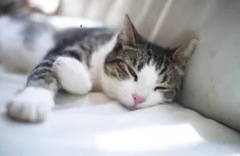
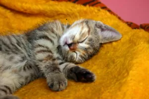

В хмурую осеннюю погоду, уходя на работу, с завистью смотришь на свою кошку, которая сладко спит, растянувшись
на вашей
кровати и представляешь себя не ее месте. И, если вы являетесь счастливым хозяином представителя семейства кошачьих,
то вы
наверняка задавались вопросом: почему моя кошка так много спит и нормально ли это?
Чтоб не разводить интригу ответим сразу – да это нормально, кошки в среднем спят от 12 до 16 часов в сутки.

Кошки много спят, спят долгие-долгие часы, чтобы восстановить свою энергию. Но вы можете заметить, что режим сна
кошки немного … отличается от сна человека. Кошки спят в среднем 15 часов в день и могут спать до 20 часов в
течение 24 часов.
Однако не существует двух абсолютно одинаковых животных из семейства кошачьих, и возраст и
индивидуальный темперамент
часто могут влиять на то, сколько времени они спят. За исключением опоссумов и летучих
мышей, никакие другие животные не спят больше, чем кошки.
Девиз кошки звучит так: ешь, добывай, люби … и спи. Кошки — сумеречные животные, которые спят днем и в основном
бодрствуют в сумерках и на рассвете, подобно львам и другим кошкам. В дикой природе кошки привыкли спать
долгие часы, чтобы накопить силы для охоты на добычу.
Инстинкты домашних кошек не сильно изменились по сравнению с их
дикими собратьями, но, поскольку домашние кошки имеют надежный источник пищи, может показаться, что они остаются в глубоком
сне в течение неоправданно долгих периодов времени.
